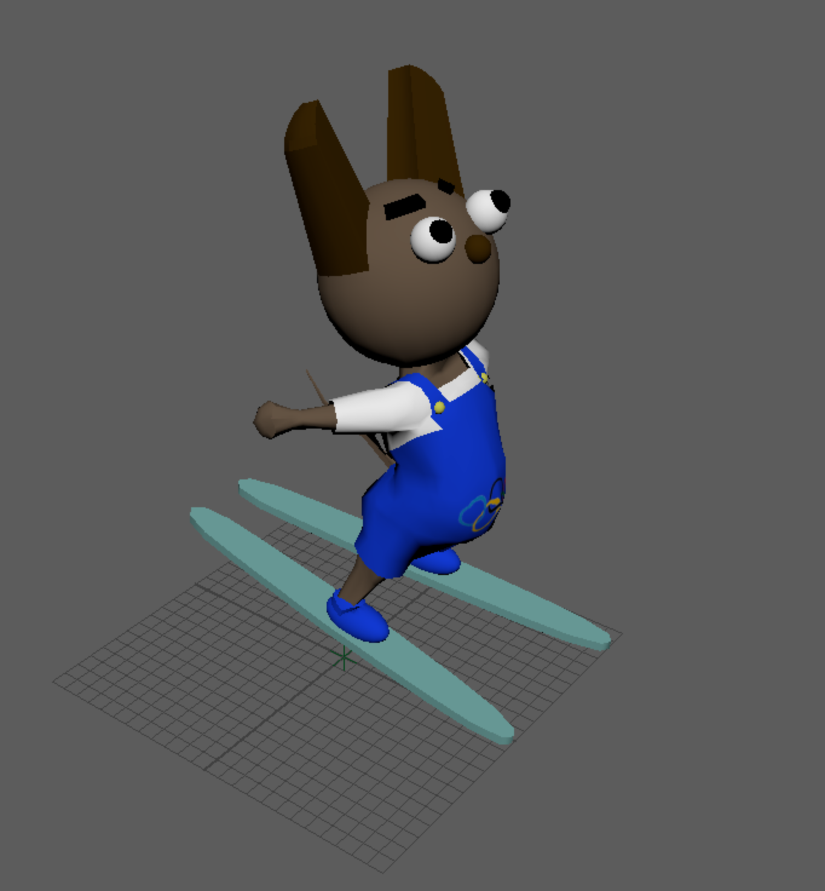

Maya 2020

- 使用ソフト : Maya 2020
- 制作年月 : 2022.1
- 制作時間 : 5時間
- 説明 : 北京オリンピック2022の期間中であったため、スキージャンプをしている動物をモデリングした。
服には五輪のマークを入れた。
- 使用ソフト : Maya 2020
- 制作年月 : 2022.1
- 制作時間 : 5時間
- 説明 : 北京オリンピック2022の期間中であったため、スノーボードをしている動物をモデリングした。
服には五輪のマークを入れた。
- 使用ソフト : Maya 2020
- 制作年月 : 2021.7
- 制作時間 : 3時間
- 説明 : 立方体を動かすロボットを作成。
- 使用ソフト : Maya 2020
- 制作年月 : 2021.7
- 制作時間 : 4時間
- 説明 : 立方体を動かすロボットを作成。
腕を動かすのに苦労したが、上手く動かすことができた。